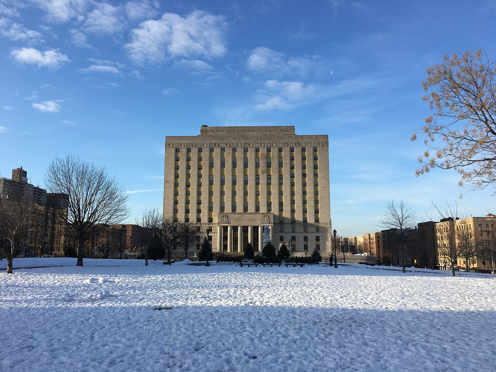

New Sheriff, Same Padlocks? What Edwin Raymond Means for Operation Padlock in the Bronx
The face of the smoke-shop crackdown is gone, a federal search hit his home, and a former NYPD whistleblower now runs the office that seals Bronx storefronts.

Key takeaways
- Mayor Mamdani replaced Sheriff Anthony Miranda with retired NYPD Lt. Edwin Raymond on May 29; Raymond was sworn in at the end of July.
- A 2024 DOI probe alleged illegal cash seizures in smoke-shop raids; Miranda denies it. Federal agents searched his home July 16.
- The city's announcement lists unlicensed cannabis enforcement among the sheriff's duties but doesn't name Operation Padlock.
- Bronx raids continued through the transition, including repeat cases at Bud-Zotic and Indica Diamond.
The Bronx felt Operation Padlock early and hard. In the first months of the city's crackdown on unlicensed smoke shops, Bronx storefronts made up more than one in five closures citywide, and the man most associated with those padlocks was New York City Sheriff Anthony Miranda.
He's out. As of late July, the office that seals shops, seizes product and runs the city's Joint Compliance Taskforce belongs to Edwin Raymond, a retired NYPD lieutenant best known for suing his own department. Here's what happened, what we know about the new sheriff, and what could change for enforcement on Bronx blocks.
How the Sheriff's Office changed hands
The appointment
On May 29, 2026, Mayor Zohran Mamdani, who took office January 1, named Raymond to replace Miranda. Miranda had been appointed by former Mayor Eric Adams in 2022 and faced years of allegations about workplace abuse and corruption, along with public calls from his own union to resign.
The most serious of those allegations came from a 2024 Department of Investigation probe, which alleged Miranda was among those responsible for illegal cash seizures during raids of unlicensed smoke shops. Miranda has denied the allegations.
The federal search
On July 16, 2026, federal agents executed a search warrant at Miranda's home in Queens. No arrests or charges have been disclosed. As always in these pages, an investigation is not a finding of guilt; our editorial guidelines explain how we handle allegations against named people.
The swearing-in
Raymond took the oath of office in the final days of July, two months after his appointment, and now runs the office outright.
| Date | Event |
|---|---|
| May 7, 2024 | Operation Padlock to Protect launches |
| Oct. 29, 2024 | Queens judge orders one padlock lifted on due-process grounds |
| Mar. 24, 2025 | Federal judge (SDNY) upholds closure of 27 shops |
| May 14, 2025 | City reports about 1,400 shops closed, $95M+ seized |
| Jan. 1, 2026 | Mayor Mamdani takes office |
| May 29, 2026 | Mamdani appoints Edwin Raymond sheriff |
| July 16, 2026 | Federal search warrant executed at Miranda's Queens home |
| Late July 2026 | Raymond sworn in |
Who is Edwin Raymond?
The city's announcement describes a 15-year NYPD career that began at age 22 in Transit District 32 and Brooklyn's 77th Precinct, rising to sergeant and then lieutenant before he retired in 2023 as commander of Community Affairs for Patrol Borough Brooklyn North. He most recently served as a social justice liaison in the state Attorney General's Office and holds a criminal justice degree from John Jay College.
What made his name, though, was a lawsuit. Raymond was among 12 Black and Hispanic officers who filed a 2015 federal suit against the NYPD's transit bureau alleging discriminatory arrest practices, a case that took aim at arrest quotas. In other words, the city has handed its most raid-heavy enforcement office to a whistleblower who built his reputation questioning how police decide whom to target.
That is a notable choice for an office whose recent reputation rests on aggressive raids.
The city replaced the face of Operation Padlock with a man who once sued the NYPD over how it chose whom to arrest. That is either a course correction or a coincidence, and Bronx storefronts will find out which.
What the job actually covers
Here's a detail worth noticing. The mayor's announcement lists the sheriff's responsibilities as including seizures of money and property under warrants and court orders, and enforcing tax laws and “laws related to unlicensed cannabis enforcement.” It does not mention Operation Padlock by name.
That could mean nothing more than a press office avoiding a predecessor's branding. It could also signal a program that continues in substance under a different frame. For now, the honest answer is that City Hall hasn't said.
Enforcement didn't pause for the transition
What we do know is that Bronx enforcement kept going through the leadership change:
- May 18, 2026: The Sheriff's Joint Compliance Taskforce and Homeland Security Investigations raided Bud-Zotic at 516 Timpson Place in Mott Haven for a third time, seizing more than 800 pounds between the store and a van, with two arrests.
- June 10–11, 2026: The Sheriff's Office returned to Indica Diamond, 1334 E Gun Hill Rd in Pelham Gardens, after the previously sealed shop allegedly cut its padlock and reopened. More than 800 pounds of product was seized and the store resealed.
Both cases point to the program's hardest problem: repeat offenders. Sealing a door is fast. Keeping it sealed is not. Our The Block roundup tracks new raids as they're reported.
By the numbers: what Padlock left behind
- Bronx closures: 160 of 715 citywide by August 12, 2024; a tally the next day put the Bronx count at 199.
- Citywide: about 1,400 shops closed and more than $95 million in product seized by May 14, 2025, the Mayor's Office said.
- Statewide (OCM): roughly 500 sealing orders, 2,000 inspections and $125 million seized, the Office of Cannabis Management reports.
- The legal side: 22 licensed adult-use dispensaries are open in the Bronx, 17 of them CAURD equity stores, state licensing records show.
The city also has a financial stake in a working legal market. Mamdani's February budget projected $24 million in city cannabis tax revenue this fiscal year, rising to $43 million by FY2030. Every sale in an unlicensed shop is revenue that projection doesn't get.
What we'll be watching
- Seizure procedures. Given the DOI allegations about cash seizures, will the office publish clear rules for how money and property taken in raids are logged and handled?
- Borough-level data. Bronx closure counts have come from different sources with different numbers. Regular, public, borough-by-borough reporting would settle that.
- Repeat offenders. Does enforcement shift toward shops that reopen after sealing, like the two Bronx cases above?
- Due process. Courts have both lifted and upheld padlocks. How the office handles hearings and notices will shape which closures stick.
- The Miranda investigation. Whether the federal inquiry produces charges or ends quietly.
What doesn't change for you
None of this changes the law for adults. If you're 21 or older, you can legally buy from a licensed store, possess up to 3 ounces of flower in public, and consume where tobacco smoking is allowed, though not in parks, cars or outdoor dining areas. Our guide to where you can smoke in the Bronx lays out the details.
The simplest way to stay on the right side of every enforcement shift is to shop licensed. Every legal store posts an OCM QR verification sticker near its entrance, and you can search any address on the state's online Dispensary Location Verification tool. Our Bronx dispensary map lists all 22 open stores; if you'd rather stay home, the delivery hub covers licensed options. In the South Bronx, Buddiez Bronx Cannabis Dispensary, a CAURD-licensed Bronx cannabis dispensary at 2935 Third Ave and a sponsor of the Free Press, is one of those verified stores.
And one reminder that never changes, regardless of who's sheriff: don't drive high.
Frequently asked questions
Who is the new NYC sheriff?
Edwin Raymond, a retired NYPD lieutenant and former social justice liaison in the state Attorney General's Office, appointed by Mayor Mamdani on May 29, 2026 and sworn in late July.
Is Operation Padlock over?
The city hasn't said. The mayor's announcement lists unlicensed cannabis enforcement among the sheriff's duties but does not mention Operation Padlock by name, and Bronx raids continued through the transition.
Was former Sheriff Anthony Miranda charged with a crime?
No charges had been disclosed. Federal agents executed a search warrant at his Queens home on July 16, 2026, and he has denied DOI allegations about cash seizures during raids.
Does the sheriff change affect legal cannabis buyers?
No. Adults 21 and older can still buy from licensed dispensaries. Verify any store with its OCM QR sticker or the state's online lookup.
Marisol Reyes
Marisol leads the Free Press newsroom and covers how New York's cannabis rules land on Bronx blocks — licensing, the Cannabis Control Board, and the city's crackdown on unlicensed shops. She reads the OCM license data so you don't have to, and she edits every story before it runs.